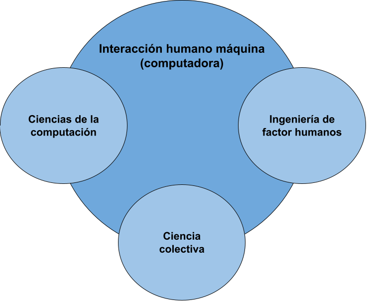
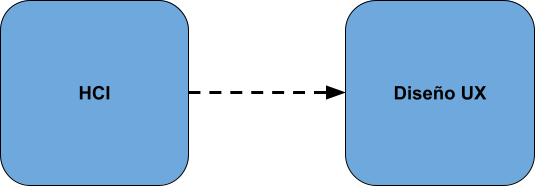

Interacción hombre-computadora (HCI)
Se conoce como a la interacción de humano – computadora es uno de los campos de estudios multidisciplinarios que permite la creación y el diseño de tecnologías informáticas y por lo general la interacción entre usuario y los computadores. En un principio se utilizó para la relación del humano con solo las computadoras, pero actualmente abarca casi abarca todos los avances tecnológicos de la humanidad.
El acenso de la interacción hombre-computadora
Esta interacción se comenzó a estudiar en la década de los 80’ con la llegada de la computación personal con computadores como el Apple Macintosh y el PC de IB entre otros, cuando estos equipos llegaron al consumidor en general estas máquinas ya poseían software bastante sofisticados como lo son los procesadores de texto, videojuegos, sistemas de contabilidad entre otros, esto trajo como consecuencia que cada vez las computadoras fueras mas accesibles y ya no solo eran utilizadas en entornos científicos, es por eso que se presento la necesidad de crear una interacción entre el humano y la computadora que fuera fácil y eficiente.

Es por eso por lo que el HCI es el objetivo de una intensa investigación académica dada su importancia, las personas que estudiaron y trabajaron en este tipo de interacción lo vieron como una manera para popularizar la idea de que el dialogo de una persona con una computadora debía ser similar al que tiene dos personas, en las primeras investigaciones del HCI las personas intentaron mejorar la usabilidad e las computadoras de escritorio haciéndolas más fáciles de usar. Luego dado el avance tecnológico del internet y teléfonos inteligentes se ve la necesidad de investigar mas en el uso de estas interfases no solo en una computadora si no en internet a través de dispositivos móviles y IOT.
El valor de la interfaz usuario en la interacción humano maquina
El estudio de estas interacciones humano maquina se derivan en diferentes áreas de estudio como lo son el diseño centrado en el usuario (UCD), el diseño de interfaz de usuario (UI) y la experiencia que este usuario obtiene (UX), es por eso por lo que podemos tomar al HCI como un antecesor al diseño de UX.

Por otro lado, aunque sean muy similares este tipo de diseño de interfaces ya que uno es precursor del otro hay algunas diferencias para tener en cuenta, cuando hablamos de la interacción humano maquina se suele hablar de enfoques mas académicos, relacionados con la investigación científica por otro lado los diseñadores de UX se suele centrar en la industria y participan en la creación de productos y servicios reales como pueden ser aplicaciones móviles o Páginas web.
Interaction Design Fundation. (s.f). Human-Computer Interaction (HCI). Recuperado el 19 de septiembre 2022. https://www.interaction-design.org/literature/topics/human-computer-interaction